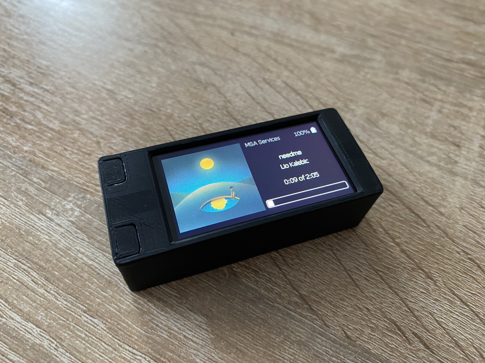

DESKHELPER / GRADUATION PROJECTEMBEDDED SYSTEMS
deskhelper
As part of my graduation project, I developed deskhelper - a smart assistant device designed to simplify everyday workflows.
The device features a graphical interface displaying commonly used tools such as a Spotify player, calendar, and time dashboard.
The system
The system supports user interaction through physical buttons and allows further expansion via custom applications utilizing the device’s I/O pins.